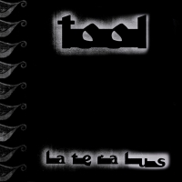

Track List
| 1 | The Grudge | 8:35 |
| 2 | Eon Blue Apocalypse | 1:04 |
| 3 | The Patient | 7:12 |
| 4 | Mantra | 1:12 |
| 5 | Schism | 6:46 |
| 6 | Parabol | 3:03 |
| 7 | Parabola | 6:02 |
| 8 | Ticks & Leeches | 8:08 |
| 9 | Lateralus | 9:22 |
| 10 | Disposition | 4:45 |
| 11 | Reflection | 11:06 |
| 12 | Triad | 8:45 |
| 13 | Faaip de Oiad | 2:38 |